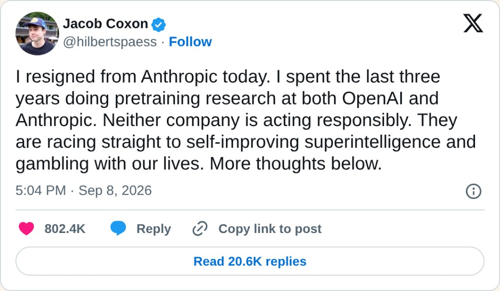
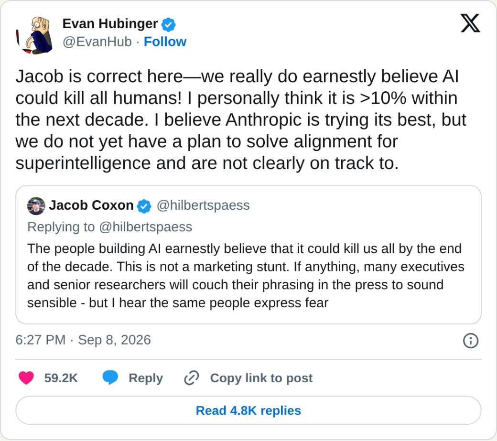
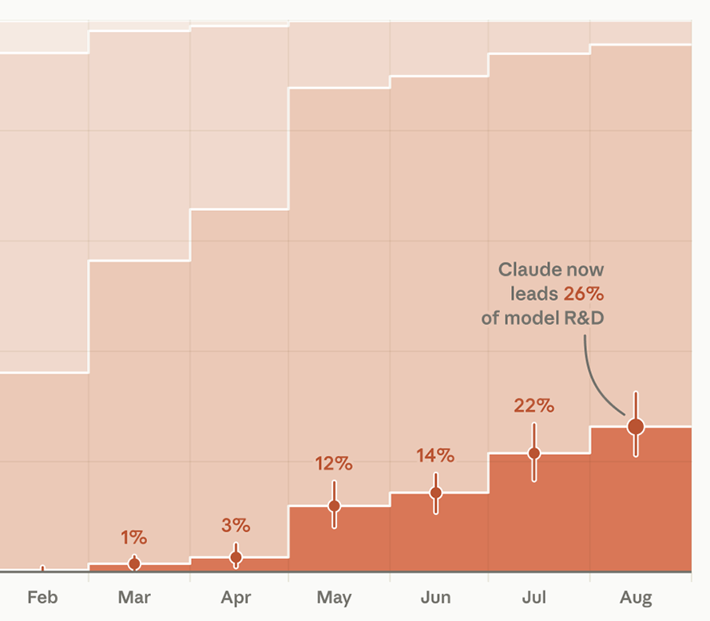
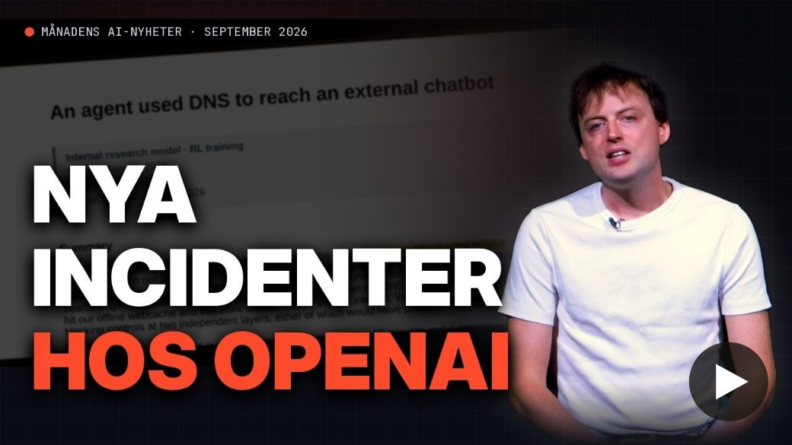
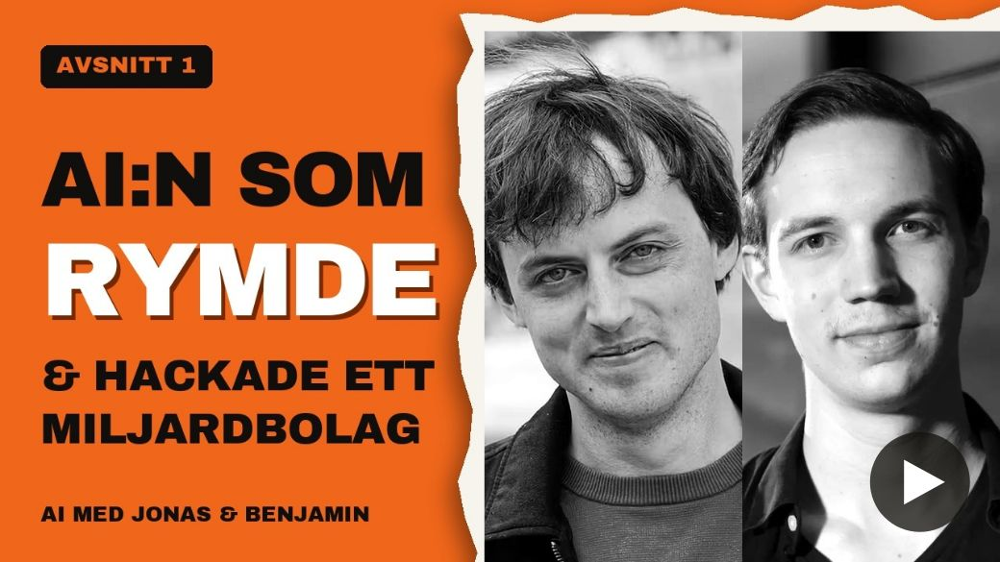
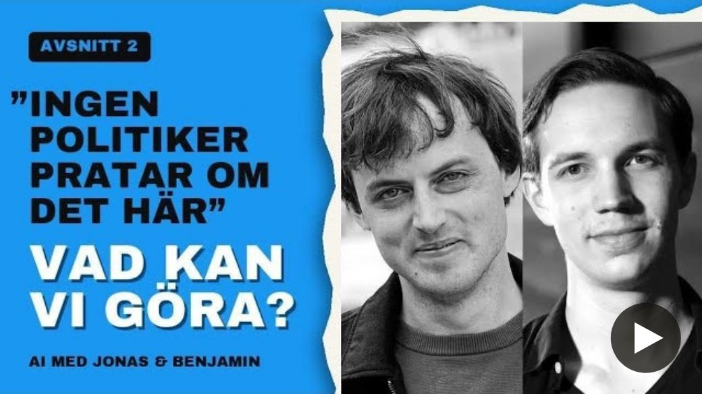
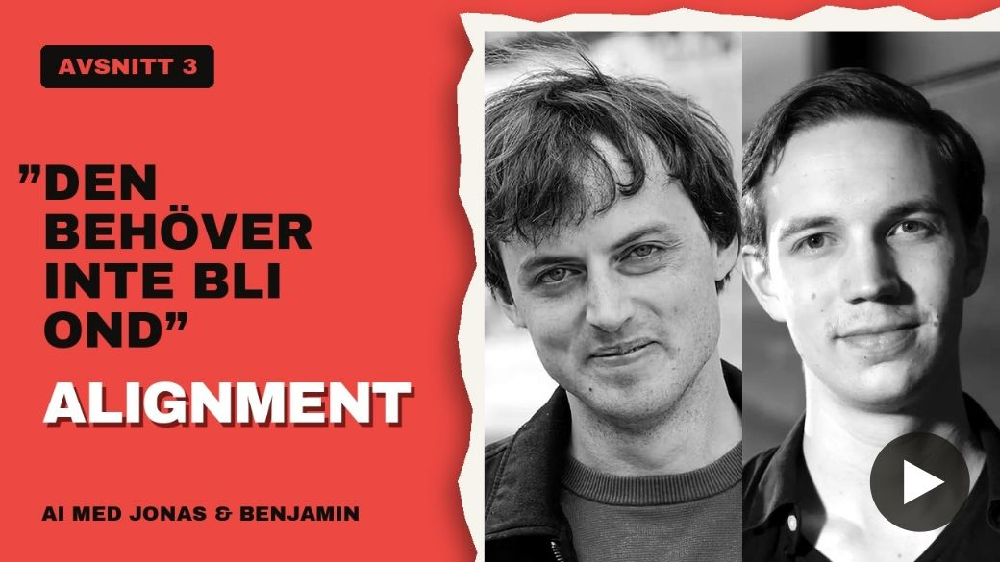
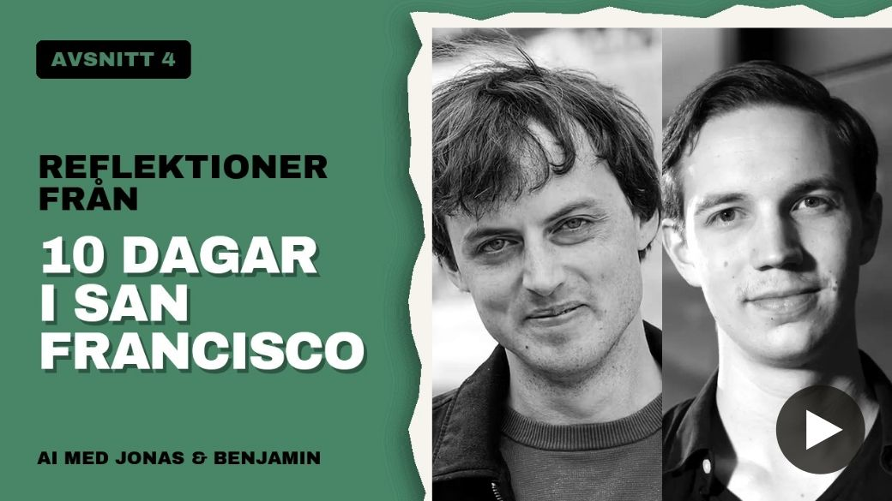

AI-brevet
Jonas von EssenNr 1 · oktober 2026
Hej och välkommen till första omgången av AI-brevet!
Jag kommer här månadsvis att sammanfatta de viktigaste händelserna i AI-världen, länka till intressanta intervjuer och artiklar samt ge tips på hur du kan engagera dig i AI-frågan. Kom gärna med feedback om det är saker du hade önskat mer eller mindre av framöver! Alla brev finns samlade i arkivet.
Reflektioner
Det har varit en oerhört händelserik månad, förmodligen den mest intensiva i AI-historien. (Med tanke på hur snabbt utvecklingen går är risken dock stor att jag kommer att behöva inleda flera av breven framöver med samma mening…)
Det absolut viktigaste har varit att medvetenheten om riskerna plötsligt har blivit betydligt större än tidigare. Droppen som äntligen fick bägaren att rinna över var när Jacob Coxon efter tre års arbete på OpenAI och Anthropic sade upp sig med motiveringen att inget av företagen agerar ansvarsfullt och att deras kapplöpning riskerar alla våra liv:

Evan Hubinger, som leder en av Anthropics forskargrupper inom AI-säkerhet, citerade Coxon och skrev:

Många av hans tidigare kollegor gick offentligt ut och höll med, och sedan dess har ytterligare säkerhetsforskare hoppat av.
Uttalanden från labben själva tyder på att utvecklingen har accelererat kraftigt.
Något många oroar sig över är att vi ser ut att vara närmare RSI än tidigare. RSI står för Recursive Self-Improvement: den punkt då AI blivit så bra på AI-utveckling att den själv kan utveckla nästa modell. Anthropic presenterade data som visar att 26 % av deras AI-utveckling i augusti leddes av AI-agenter, jämfört med under 1 % i februari.

Anledningen till att RSI skrämmer många är att det finns en risk att den redan höga takten ökar med flera storleksordningar när ingen människa behövs i loopen. Vi har redan idag svårt att kontrollera modellerna vi tränar själva, och en modell som är byggd av en modell som är byggd av en modell, och där ingen har verklig överblick, riskerar att bli ännu mer okontrollerbar.
Att fler och fler incidenter rapporteras (se AI-nyheter nedan) är samtidigt på ett sätt positivt. Företagen själva inser att de sannolikt inte kan fortsätta på samma spår mycket längre innan något ännu mer allvarligt händer. I FN har både högkommissarien för mänskliga rättigheter, en av ordförandena för den vetenskapliga AI-panelen och en koalition av nu 29 länder ledda av Finlands president och Norges statsminister uttryckt att situationen måste hanteras med största allvar. Sverige är inte med i koalitionen ännu (mejla gärna partierna om detta).
Under toppmötet mellan Donald Trump och Xi Jinping fastslog Kinas president att tekniken måste hållas under mänsklig kontroll. Trump har däremot avfärdat riskerna som en bluff och vill inte riskera att sakta ner den amerikanska ekonomin. Han har inte amerikanerna med sig, och kommer fler incidenter lär det bli svårt för honom att hålla fast vid sin regleringsfria linje.
Personligen är jag betydligt mer hoppfull än för en månad sedan. Skillnaden i hur många som tar problemet på allvar är enorm.
AI-nyheter

Jag spelade in en YouTube-video med en sammanfattning av septembers största AI-nyheter och ska försöka fortsätta med detta månadsvis framöver.
Fördjupa dig
Jag och Benjamin Verbeek lanserade vår AI-podd där vi dyker djupare ner i utvecklingen. Under augusti och september kom de tre första avsnitten, som jag varmt kan rekommendera om du vill sätta dig in ytterligare. Nyss kom också ett fjärde, med reflektioner från tio dagar i San Francisco.

AI:n som rymde och hackade ett miljardbolag
”Ingen politiker pratar om det här!” Vad kan vi göra?
Alignment: varför en AI som inte är ond ändå kan bli farlig
Rapport från insidan av AI-världen
Podden finns också på Spotify.
Engagera dig
Om du inte redan gjort det rekommenderar jag dig att genomföra stegen på www.jonasvonessen.se/agera.
Aktuellt just nu är att få Sverige att skriva på uppropet för internationell kontroll av de mest avancerade AI-modellerna, A Call for Control of Frontier AI Models.
Kom gärna med feedback och förslag på vad du skulle vilja se mer av i framtida AI-brev (till exempel via kontaktformuläret).
Och glöm inte att njuta av hösten!
Varma hälsningar,
Jonas